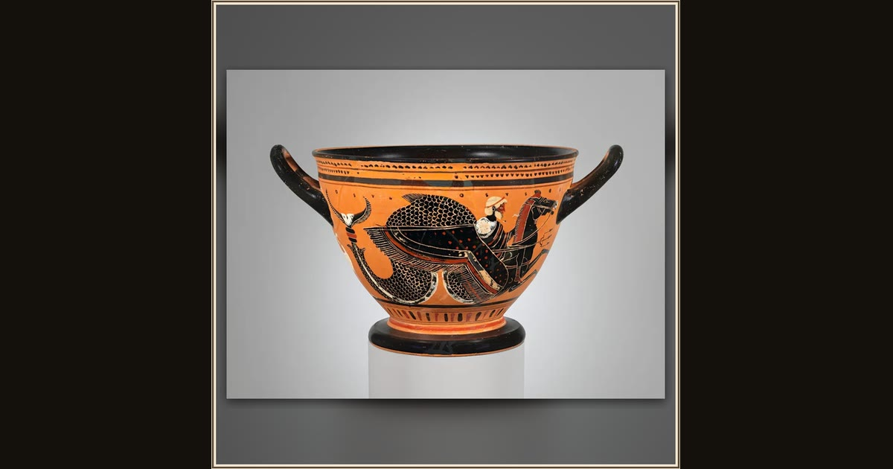

Terracotta skyphos (deep drinking cup)
Theseus Painter · ca. 500 BCE · met
A rider sits on a winged sea-horse painted on a drinking cup; Critias describes Poseidon’s golden statue in a chariot drawn by six winged horses (116d) Explore its place in Plato's Dialogues, Critias, section 52.